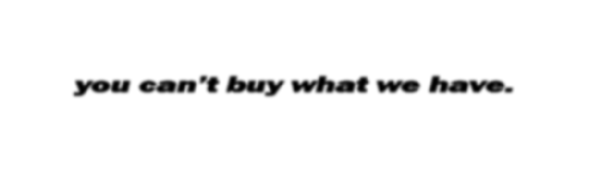

Good taste isn't bought. It's inherited. Not through wealth, but instinct, the fources that shape us, our brains, our ambition. This is what we've built our company on — the belief that taste is a priviledge, not wealth. Taste can be taught from anyone, anywhere. It takes a certain type of mind to receive this understanding.
That our goal, to recognize the inherent tension in our world: the interplay of opulence and ingenuity. To show you that your inheritance extends beyond finances. It's comprised of discernment, understanding, and unique vision—values that transcend fiscal concerns. Being privileged isn't a new concept. It predates the modern focus on financial wealth. True privilege is understanding, harmonizing with the world around you.
